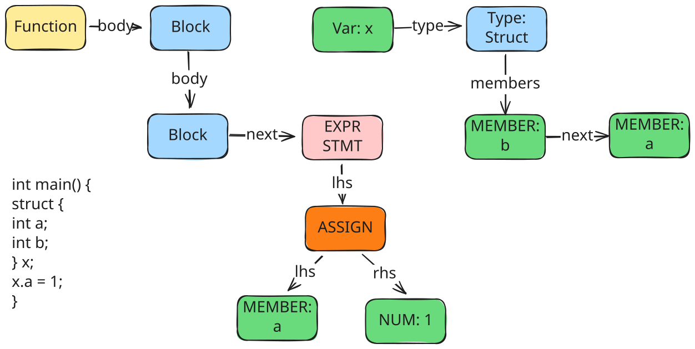

支持struct
结构体是一种复杂的数据类型，允许在一片内存空间组合不同类型的数据，这些不同的数据类型称为结构体成员。同时，结构体提供了一个命名空间，使得其成员变量能够通过结构体实例来进行访问。
- 结构体类比于数组，同样是一种存储数据集合的结构，数组存储的为类型相同的数据集合，并使用下标进行索引，而结构体则提供了更灵活的数据管理方式，存储类型不同的数据，并使用命名进行索引

编译器要支持结构体类型，需要各个阶段增加逻辑，主要如下：
- 在词法分析中增加
struct关键词的识别 - 抽象语法树中增加对于结构体类型的解析，同时还需要支持使用
.访问成员变量的语法 - 代码生成中增加对结构体成员地址偏移的计算
使用如下结构体来描述一个struct的成员，同一个struct的所有成员通过链表连接到一起
- 每个结构体成员有自己的
type和offset，用来计算在内存中的存储位置和读取方式 - 每个结构体成员有自己的
name，用来在一个struct中索引成员变量
// AST中用于描述结构体成员的数据结构
struct Member {
Member *next; // 下一成员
Type *type; // 类型
Token *name; // 名称
int offset; // 偏移量
};
词法分析
将struct标记为关键字
语法分析
当前处理过程中，结构体是一个仅在编译时存在的数据类型，而在编译后的代码中不存在相应的内容
词法分析中，需要解决两个问题
- 解析构体类型的声明，获取结构体的成员类型、名称等信息，并计算每个成员的偏移量
- 解析结构体引用，即
.操作符，针对成员变量的访问生成对应的AST节点
增加struct的类型声明的支持，用以生成struc的类型信息
// declspec = "char" | "int" | struct_decl
增加struct成员变量声明的支持
// struct_members = (declspec declarator ("," declarator)* ";")*
// structDecl = "{" structMembers
成员变量的声明方式与局部变量声明类似，首先需要解析成员的类型，并获取其名称，将这些信息保存到member数据中，并通过链表串联起来，最后将链表头保存到struct类型的member成员中
static void struct_members(Token **rest, Token *token, Type *type) {
Member head = {};
Member *cur = &head;
while (!equal(token, "}")) {
Type *base_type = declspec(&token, token);
int first = true;
// 形如 `int a, *b, c;`
while (!consume(&token, token, ";")) {
if (!first)
token = skip(token, ",");
first = false;
Member *member = calloc(1, sizeof(Member));
member->type = declarator(&token, token, base_type);
member->token = member->type->token;
cur = cur->next = member;
}
}
*rest = token->next;
// 此type为struct
type->members = head.next;
}
在解析完成员类型之后，还需要进一步计算每个成员的偏移量，将这些数据填充到member中，并最终得到struct类型的大小
static Type *struct_decl(Token **rest, Token *token) {
token = skip(token, "{");
// 构造一个结构体
Type *type = calloc(1, sizeof(Type));
type->kind = TY_STRUCT;
struct_members(rest, token, type);
// 计算成员的偏移量
int offset = 0;
for (Member *member = type->members; member; member = member->next) {
member->offset = offset;
offset += member->type->size;
}
type->size = offset;
return type;
}
增加struct成员变量访问的支持
// postfix = primary ("[" expr "]" | "." ident)*
使用.时，即需要对结构体成员进行访问，这一操作会对应AST中的一个Member节点
- Member节点的lhs指向结构体x类型的变量
- Member节点的member字段指向Member成员
- 与多维数组类似，允许嵌套的访问，并在lhs上链接起来
static Member *get_struct_member(Type *type, Token *token) {
for (Member *member = type->members; member; member = member->next) {
if (member->token->len == token->len &&
!strncmp(member->token->loc, token->loc, token->len))
return member;
}
error_token(token, "struct has no such member");
return NULL;
}
static Node *struct_ref(Node *lhs, Token *token) {
add_type(lhs);
if (lhs->type->kind != TY_STRUCT)
error_token(lhs->token, "not a struct");
// 成员为单臂节点，并指向结构体
Node *node = new_node_unary(ND_MEMBER, lhs, token);
node->member = get_struct_member(lhs->type, token);
return node;
}
PARSER_DEFINE(postfix) {
Node *node = primary(&token, token);
while (true) {
...
// x.y.z
if (equal(token, ".")) {
node = struct_ref(node, token->next);
token = token->next->next;
continue;
}
...
}
}
语义分析
语义分析的核心在于将成员变量的访问，转化为结构体变量+成员偏移的内存访问计算，因此在地址计算中增加如下规则
case ND_MEMBER:
gen_addr(node->lhs);
println(" # 计算成员变量的地址偏移量");
println(" li t0, %d", node->member->offset);
println(" add a0, a0, t0");
return;
而在访问中，Member与Var的处理一致，均在计算得到地址后，将数据从内存地址加载到a0寄存器
case ND_VAR:
case ND_MEMBER:
gen_addr(node);
load(node->type);
return;